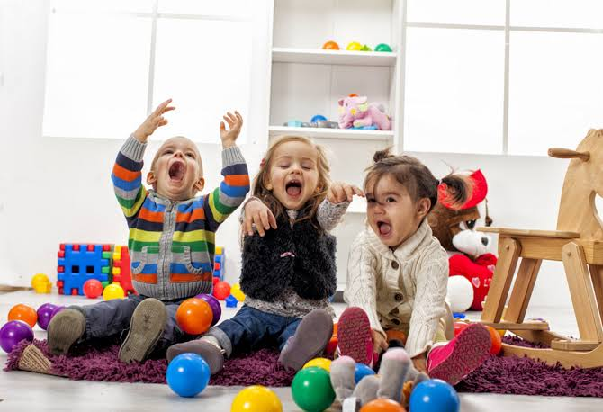
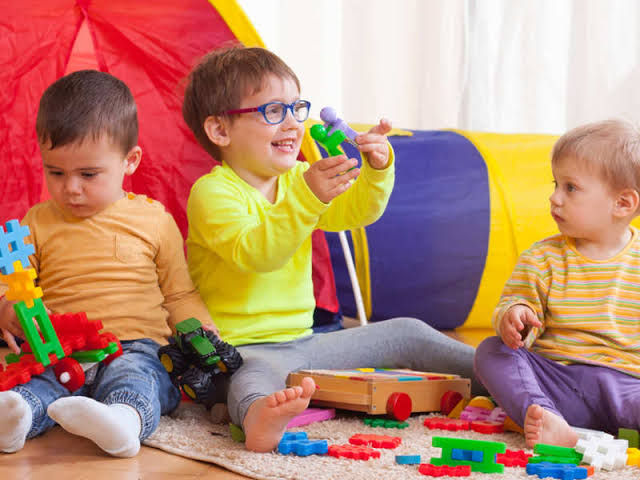
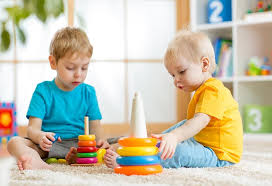
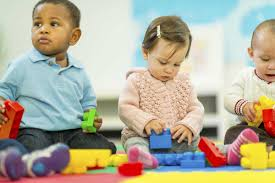
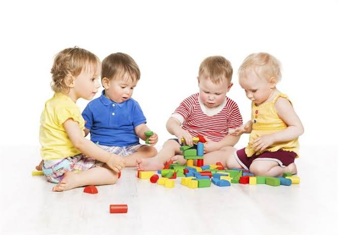
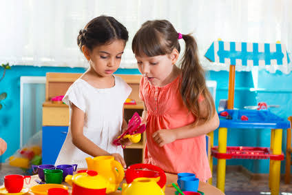
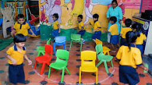
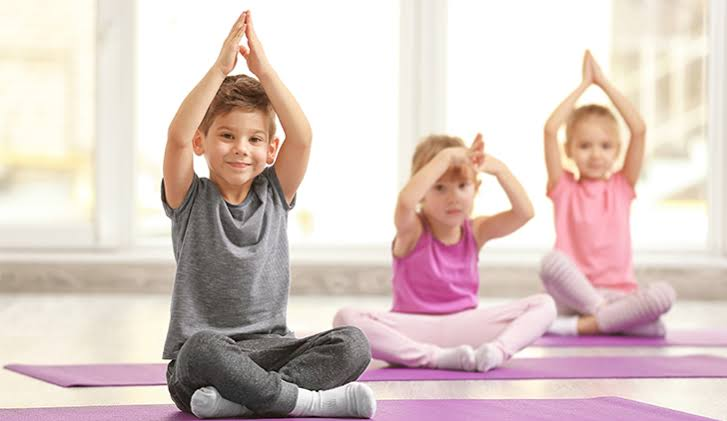
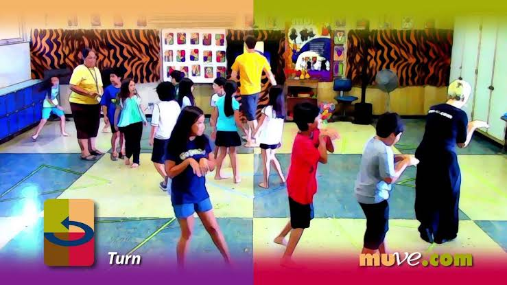

Indoor Games

Providing whole class recess activities is wonderful because it gives kids a chance to move around and release energy before it’s time to sit still and focus again.

Four Corners
This classic indoor game is simple to teach and easy to play. I’ve really enjoyed participating in Four Corners with students (rather just than facilitating the game) during recess, so it’s a great option when you really need a fun break for yourself. Forgot how to play? Here’s a step-by-step guide to jog your memory.

Balloon or foam ball games
If you don’t mind a little (or a lot!) of movement and noise, then give the kids play balloon badminton or balloon volleyball. Paper plates make great paddles if you need them! There are tons of other ways a single balloon can entertain a group of kids–check out this great collection of group balloon games.

The Hot/Cold game
This group game is easy to teach and requires zero preparation. Find a fair way to select the “it” student and have this student go out into the hallway while you hide the object he or she has to search for. When the student comes back in, the class will yell hot, warmer, or cold, depending on how close he or she is to the missing object.

Hand tricks
Many kids have never been taught traditional hand tricks such as cat’s cradle and hand jives. These are great activities for developing fine motor skills and concentration: get step-by-step instructions here and here. I’ve also found a good Pinterest board with lots of hand clapping games and routines to choose from.

Charades
Both younger and older students will enjoy this indoor recess activity. Have kids guess animals, characters from books you’ve read together, and other concepts you have discussed in class. You can also have kids create charade cards: each child takes a couple of index cards and writes a charades action on it. Mix up the cards and pass them out for kids to use when playing the game. After a few whole class sessions to make sure kids understand the rules, you can have them play in small groups so that each student gets more opportunities to participate.

Chair-less musical chairs
Who says you can’t use this party staple during indoor recess? Minimize the chance of small accidents and the disruption to your desk arrangement by playing a chair-less version of the game. Give each child a carpet square or small piece of construction paper to lay on the floor: these will be the spots that kids try to sit on when the music stops. I like to divide the class in half and run two simultaneous games of chair-less musical chairs. This allows me to separate certain students if needed, speeds up the time it takes to complete the game, and decreases the time any one student spends “out.”

Yoga and stretching
I know dozens of teachers who swear that classroom yoga has been a huge hit with students and increased their energy and focus. The most engaging and simplest method I know of is GoNoodle’s Maximo videos. Each one is about 3-4 minutes in length, so you can either let the kids vote on several Maximo videos to complete, or choose one to end your indoor recess time and get the kids ready to transition back into learning.

Start or end with a Freeze Dance Party
Most kids love to dance or just be silly with their friends, so this is a great way to get kids moving indoors. Play a CD or stream music on a computer that’s hooked up to an LCD projector with decent sound, and let the kids shake it off. I’ve found this option is best for short periods of time, generally no more than 5-7 minutes: any longer and things start to get a little crazy! So, I like to start or end the indoor recess period with a freeze dance to make sure the kids get a chance to move around a bit before (or after) a calmer activity, like small group choices.